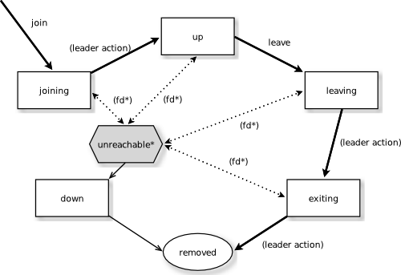

By Tomasz Kogut / @almendar
2015.03.18
A set of nodes with a membership service
AKKA clustering is NOT about fail-over or replication
Leader changes the nodes state
Only state that can be recovered from is 'unreachable'
If you go out there is no commin' back!
In case any of the nodes becomes unreachable convergence is not possible
dependencies
"com.typesafe.akka" %% "akka-cluster" % "x.x.x"application.conf
akka {
actor { provider = "akka.cluster.ClusterActorRefProvider" }
remote {
log-remote-lifecycle-events = off
netty.tcp {
hostname = "ip_address"
port = 0
}
}
cluster {
seed-nodes = [
"akka.tcp://ClusterSystem@machine1:2551",
"akka.tcp://ClusterSystem@machine2:2552"]
auto-down-unreachable-after = 10s
}
}
class SimpleClusterListener extends Actor with ActorLogging {
val cluster = Cluster(context.system)
override def preStart(): Unit = {
cluster.subscribe(self, initialStateMode =
InitialStateAsEvents,
classOf[MemberEvent], classOf[UnreachableMember])
}
override def postStop(): Unit = cluster.unsubscribe(self)
def receive = {
case state: CurrentClusterState =>
case MemberUp(member) =>
case UnreachableMember(member) =>
case MemberRemoved(member, previousStatus) =>
case _: MemberEvent =>
}
}
Selecting remote actor
context.actorSelection(RootActorPath(member.address)
/ "user" / "frontend")Creating actor on a remote node
system.actorOf(Props[SampleActor]
.withDeploy(Deploy(scope = RemoteScope(member.address))))
Using remote actorRefs
actorRef ! "message" //transparent if acquired properly
def resolveOne(timeout: FiniteDuration):
Future[ActorRef]
val parent : ActorRef = context.parent
val children: Iterable[ActorRef] =
context.children
Don't use local selection paths. They are missing the address part
context.actorSelection("/user/actorName") //won't workWorks the same way as it would in a non-cluster mode
context.watch(actorRef)
context.watch(actorSelection) <- can't do thisNotice that dead child is not handled by the supervision strategy
akka {
actor {
deployment {
/sampleActor {
remote = "akka.tcp://sampleActorSystem@127.0.0.1:2553"
}
}
}
}
val actor = system.actorOf(Props[SampleActor], "sampleActor")
actor ! "Pretty slick"
Remember that jar with that class is needed
akka.cluster.min-nr-of-members = 3akka.cluster.roles = [compute]
override def receive: Receive = {
case MemberUp(member) if(member.hasRole("compute")) =>
(...)
}
akka.cluster.role {
frontend.min-nr-of-members = 1
backend.min-nr-of-members = 2
}
akka.actor.deployment {
/statsService/workerRouter {
router = consistent-hashing-group
nr-of-instances = 100
routees.paths = ["/user/statsWorker"]
cluster {
enabled = on
allow-local-routees = on
use-role = compute
}
}
}
akka.actor.deployment {
/singleton/statsService/workerRouter {
router = consistent-hashing-pool
nr-of-instances = 100
cluster {
enabled = on
max-nr-of-instances-per-node = 3
allow-local-routees = on
use-role = compute
}
}
}
Many of the code examples and images were taken from the official akka documentation
AKKA docs